Contributors
-
Suse Anderson
 Suse Anderson (she/her) is an Assistant Professor, Museum Studies at The George Washington University, and host of Museopunks – the podcast for the progressive museum. For more than a decade, her work focused on the intersection of museums and technology, culminating in the 2020 publication of The Digital Future of Museums: Conversations and Provocations, with Dr. Keir Winesmith. More recently, Anderson has become concerned with investigating contemporary ethical dilemmas confronting the field. She holds a PhD from The University of Newcastle, Australia. Since moving to Baltimore in 2014, Anderson has fallen in love with the city she now calls home. You should visit her there.
Suse Anderson (she/her) is an Assistant Professor, Museum Studies at The George Washington University, and host of Museopunks – the podcast for the progressive museum. For more than a decade, her work focused on the intersection of museums and technology, culminating in the 2020 publication of The Digital Future of Museums: Conversations and Provocations, with Dr. Keir Winesmith. More recently, Anderson has become concerned with investigating contemporary ethical dilemmas confronting the field. She holds a PhD from The University of Newcastle, Australia. Since moving to Baltimore in 2014, Anderson has fallen in love with the city she now calls home. You should visit her there. -
Alyssa Barilotti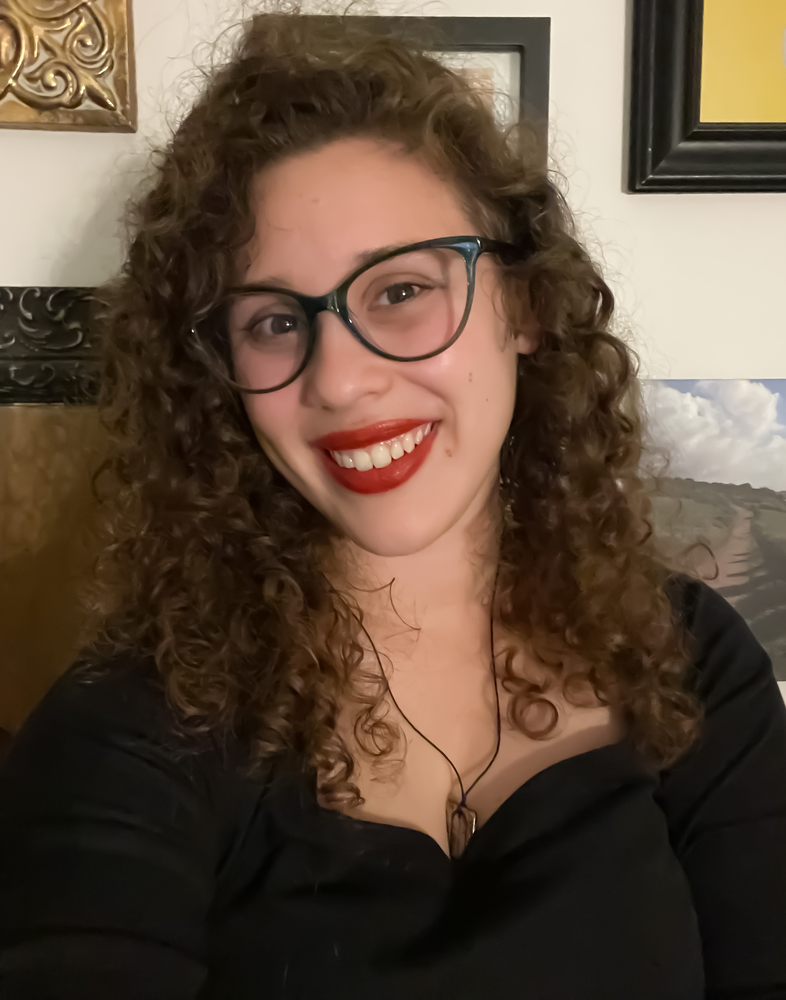Alyssa Barilotti is a second-year graduate student at George Washington University, pursing a degree in Museum Studies with a concentration in Public Engagement. She holds a dual bachelors degree from Arcadia University in International Studies and French, with a focus on Conflict Resolution and Peacebuilding. Alyssa believes museums can be powerful agents for change, and has focused her studies on how museums can harness their soft power resources to address the most difficult global challenges. Connect by email.
V. Will the Digital Do? Exploring the Role of 3D Technologies in Repatriation Negotiations
-
Samantha Bateman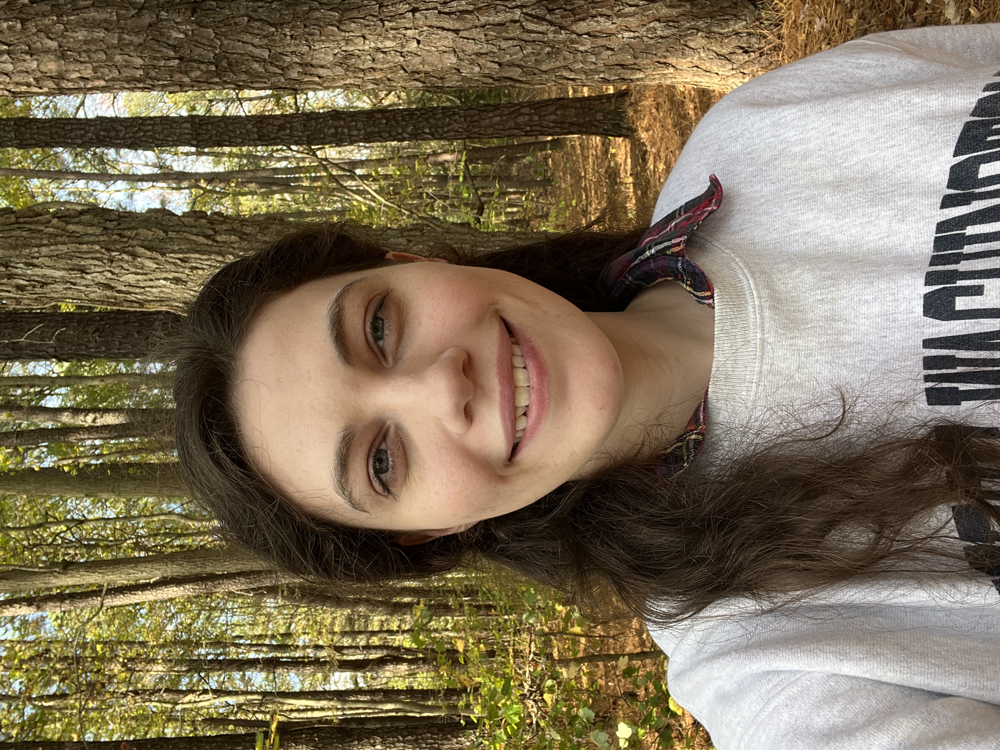Samantha Bateman (she/her/hers) is a Museum Studies graduate student at George Washington University concentrating in Museum Management. She received an A.A. in General Humanities from Montgomery College in 2017 and a B.A. in Anthropology from American University in 2019, after spending a semester in the Department of Anthropology and Institute of Archaeology at University of College London in 2018. Samantha believes that museums have the power to be positive changemakers in the communities they serve through championing accessibility and fostering life-long learning.
-
Grace Bautista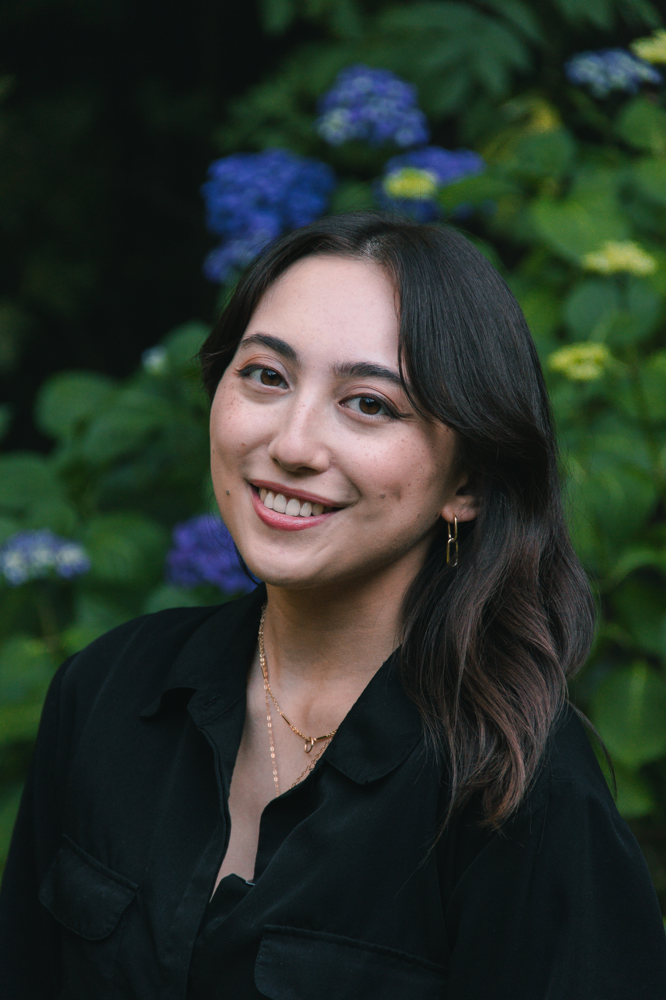Grace Bautista (she/her) is a second-year museum studies student at the George Washington University, where she also received her BA in American studies. Through her concentration in public engagement, she has worked at the intersection of digital media, education, and public programs. Grace is currently an intern at the Smithsonian Asian Pacific American Center, where she is interested in building community through digital education resources. Email: gbautista@gwu.edu.
-
Andrew BesslerAndrew Bessler is a graduate student at George Washington University, pursuing a degree in Museum Studies with a focus on exhibition design. He earned his B.A. in Emerging Technology in Business and Design from Miami University. He is interested in the adoption of digital technologies within museums to augment and enhance education.
-
Kirstin Canner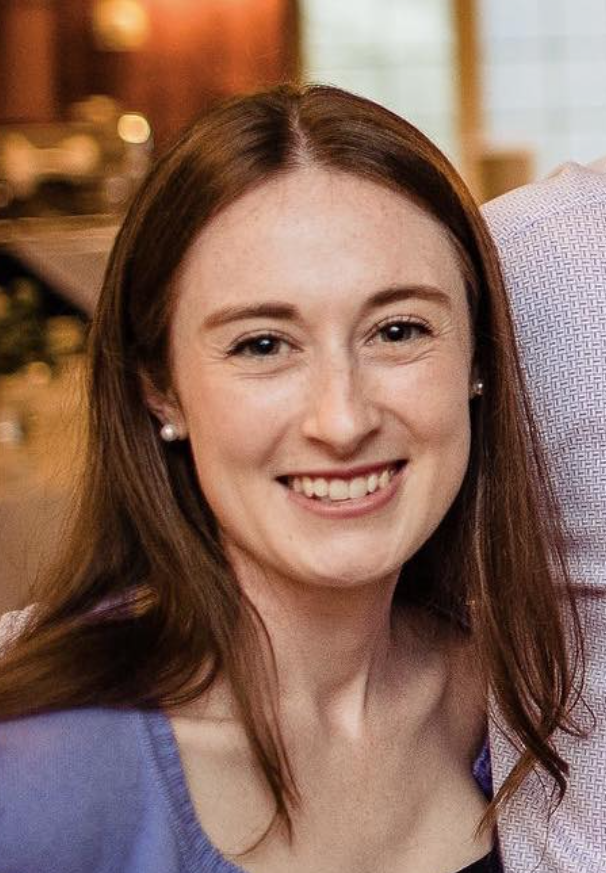Kirstin Canner (she,her) graduated from The George Washington University’s Museum Studies masters program in December 2022 with a concentration in Exhibitions and Visitor Experience. She also holds a Bachelor of Arts in Studio Art from High Point University. Prior to her GW journey, she managed The American Treasure Tour Museum, a small pop culture museum outside of Philadelphia. Kirstin has just concluded an internship with the Education Department at the Capital Jewish Museum, and is looking forward to her next quirky museum job. Connect via email: kirstincanner@gmail.com or LinkedIn.
XV. The Virtual Art Museum: The Potentials and Pitfalls of VOMA
-
Jamie CarkenordJamie Carkenord is a first-year Museum Studies graduate student with a concentration in Exhibitions and Visitor Experience. Originally from Farmville, Virginia, she received a B.A. in American Studies from the College of William and Mary. She is interested in public history education and inclusive representation within art and history museums.
-
Elizabeth Day
 Elizabeth Day is currently a museum studies graduate student at The George Washington University. She attended Saint Mary’s College, Notre Dame, IN, and received B.A.s in communication studies and history, and then Elizabeth worked as Assistant Curator & Collections Manager at the Peoria Riverfront Museum in Peoria, IL. Elizabeth dreams of restoring a Chateau in the South of France and giving historic tours of the property. In the meantime, she is open to any opportunity in the museum field.
Elizabeth Day is currently a museum studies graduate student at The George Washington University. She attended Saint Mary’s College, Notre Dame, IN, and received B.A.s in communication studies and history, and then Elizabeth worked as Assistant Curator & Collections Manager at the Peoria Riverfront Museum in Peoria, IL. Elizabeth dreams of restoring a Chateau in the South of France and giving historic tours of the property. In the meantime, she is open to any opportunity in the museum field. -
Sarah FarverSarah Farver is a Museum Studies graduate student at the George Washington University. Her current role at The George Washington University Museum and The Textile Museum focuses on communications and the visitor experience. Farver pursues her passion for museum education as a volunteer at the National Archives Museum and her love of the performing arts as an usher at the Kennedy Center. She holds a BA in History with a certificate in Public History and a minor in Art History from The College of William & Mary. Connect on LinkedIn.
-
Joey IngrumJoseph Ingrum is a second year Museum Studies graduate student at George Washington University with a concentration in collections management. He received a B.A. in history and archaeology from Lycoming College in 2018. He has worked with museum collections at Old Sturbridge Village, Montgomery History, and the Smithsonian Museum of American History. His goal is to one day help museums adopt methods to improve their full cataloging and inventorying projects.
-
Sophia Kaminski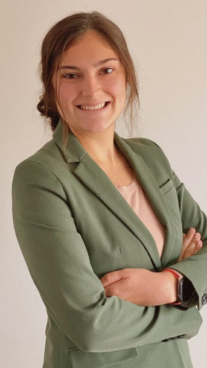Sophia Kaminski is a second-year graduate student in George Washington University’s Museum Studies program with a concentration in Collections Management. She earned her BS in History and minor in Sociology from Grand Valley State University located in Grand Rapids, Michigan. Currently, Sophia is an intern with Smithsonian’s National Collections Program. Sophia’s strong passion for museum ethics has and continues to guide her work. connect via email
-
Raeana Kiss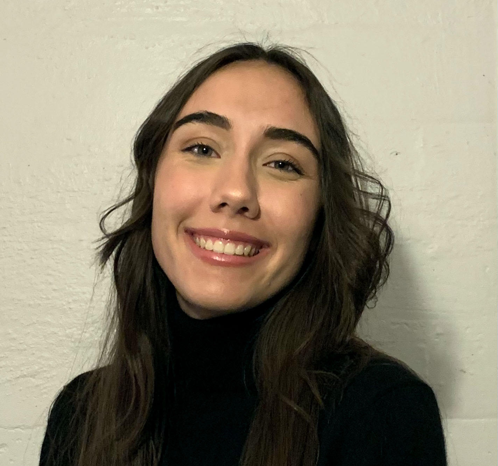Raeana Kiss is pursuing an M.A. in Museum Studies at George Washington University, with a concentration in Exhibitions and Visitor Experience. She recently graduated from Cornell University with a B.A. in Biological Sciences, with a concentration in Ecology and Evolutionary Biology. In addition to her academic pursuits, Raeana’s other passions include painting and hiking. She hopes to use her future museum career to help bridge the knowledge gap between scientific research and public understanding.
-
Diego Mountin
-
Rachael Price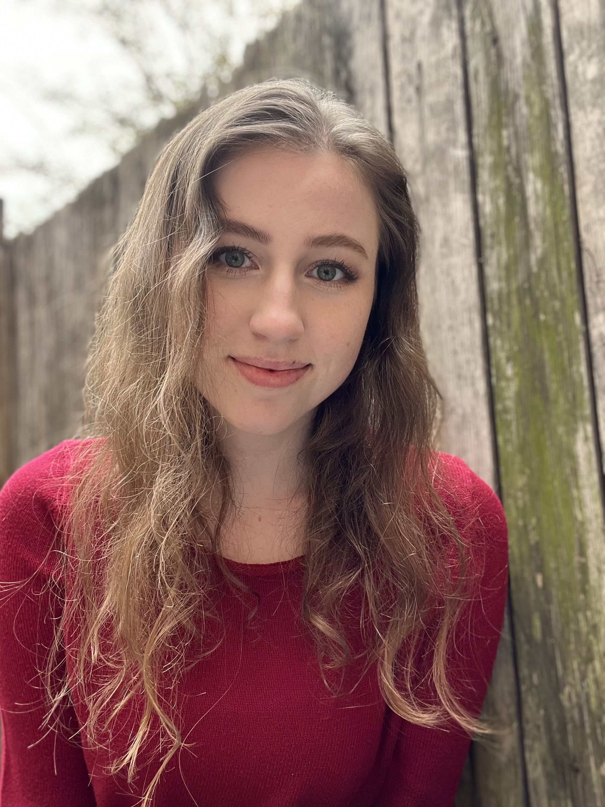Rachael Price is a first year Museum Studies graduate student at George Washington University, focusing on collections management. Originally from Metro Detroit, she received her B.A. in Anthropology and International Studies from the University of Michigan, Ann Arbor. She is interested community engagement and the power of objects in fostering connections and greater understanding. Connect on LinkedIn.
-
Anissa Santos
 Anissa Santos is a first-year graduate student in the Museum Studies program at The George Washington University with an emphasis in Exhibitions and Visitor Experience. She graduated from the University of Southern California (USC) with a Bachelor of Arts in Media Arts + Practice and a minor in History. She hopes to combine her digital media design experience and research expertise to pursue curatorial work, exhibition design, museum education, or public programming in the museum field. Email: amsantos@gwu.edu Website: anissamsantos.com
Anissa Santos is a first-year graduate student in the Museum Studies program at The George Washington University with an emphasis in Exhibitions and Visitor Experience. She graduated from the University of Southern California (USC) with a Bachelor of Arts in Media Arts + Practice and a minor in History. She hopes to combine her digital media design experience and research expertise to pursue curatorial work, exhibition design, museum education, or public programming in the museum field. Email: amsantos@gwu.edu Website: anissamsantos.comXII. QR Codes and Museums: More Potential Than Meets the Eye?
-
Megan Snyder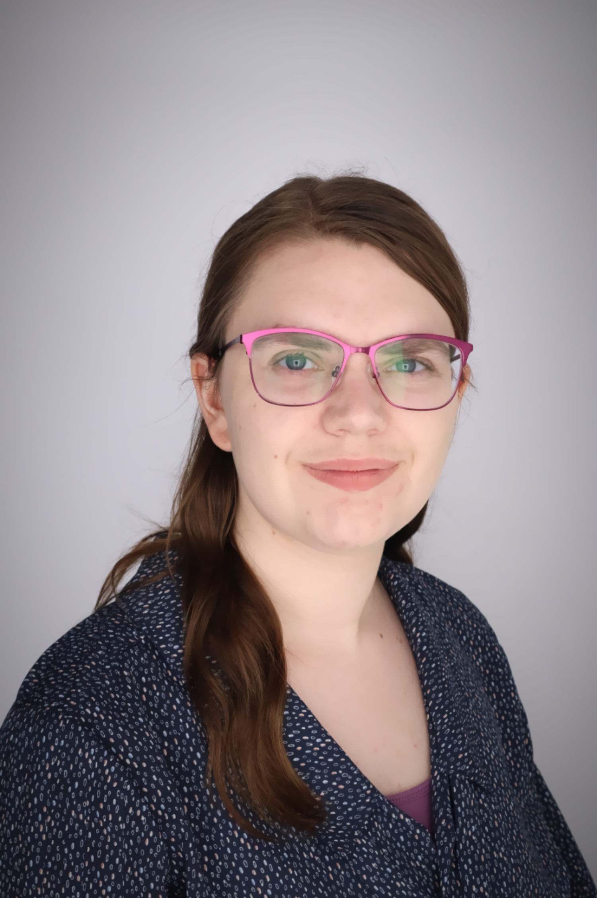Megan Snyder is a first-year Museum Studies Master’s student at George Washington University. She earned her Bachelor of Arts in History with minors in Anthropology and Museum Studies from Miami University in Oxford, Ohio. She is passionate about engaging the public with history through physical objects, interactives, and digital collections. Her experience digitizing archival collections, preventative conservation, research, and public engagement drives her desire to facilitate educational opportunities about history in museums. LinkedIn: https://www.linkedin.com/in/megan-snyder-history/
VII. Are You There? Archival and Curatorial Silences in the Digital Sphere
-
Hannah Spiering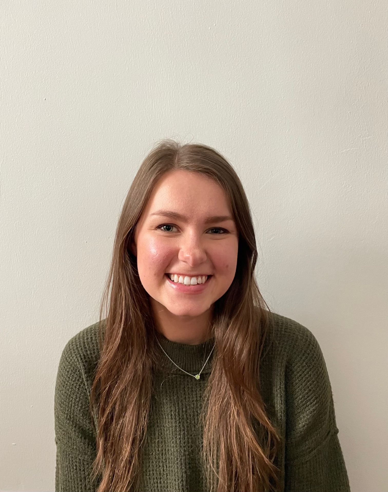Hannah Spiering is a second-year Master’s candidate in Museum Studies at George Washington University with a concentration in Museum Management. She earned B.A.’s from University of California, Los Angeles in Art History and Anthropology prior to pursuing her passion in museum work. She values the power of policy and currently interns with the U.S. Department of the Interior Museum Program in museum administration. Email: hkspiering@gmail.com
-
Elsa Tolman
 Elsa Tolman (she/her) is pursuing a M.A. in Museum Studies at George Washington University with a concentration in collections management. She received her B.A. in Anthropology from Brigham Young University (Provo), with a focus on socio-cultural anthropology and archaeology. She has a particular interest in increasing inclusion and accessibility in digital and physical museum collections to better serve our communities. Email: tolmanelsa@gmail.com LinkedIn: https://www.linkedin.com/in/elsatolman/
Elsa Tolman (she/her) is pursuing a M.A. in Museum Studies at George Washington University with a concentration in collections management. She received her B.A. in Anthropology from Brigham Young University (Provo), with a focus on socio-cultural anthropology and archaeology. She has a particular interest in increasing inclusion and accessibility in digital and physical museum collections to better serve our communities. Email: tolmanelsa@gmail.com LinkedIn: https://www.linkedin.com/in/elsatolman/ -
Marisa Julia Pauli Velarde de Orbegoso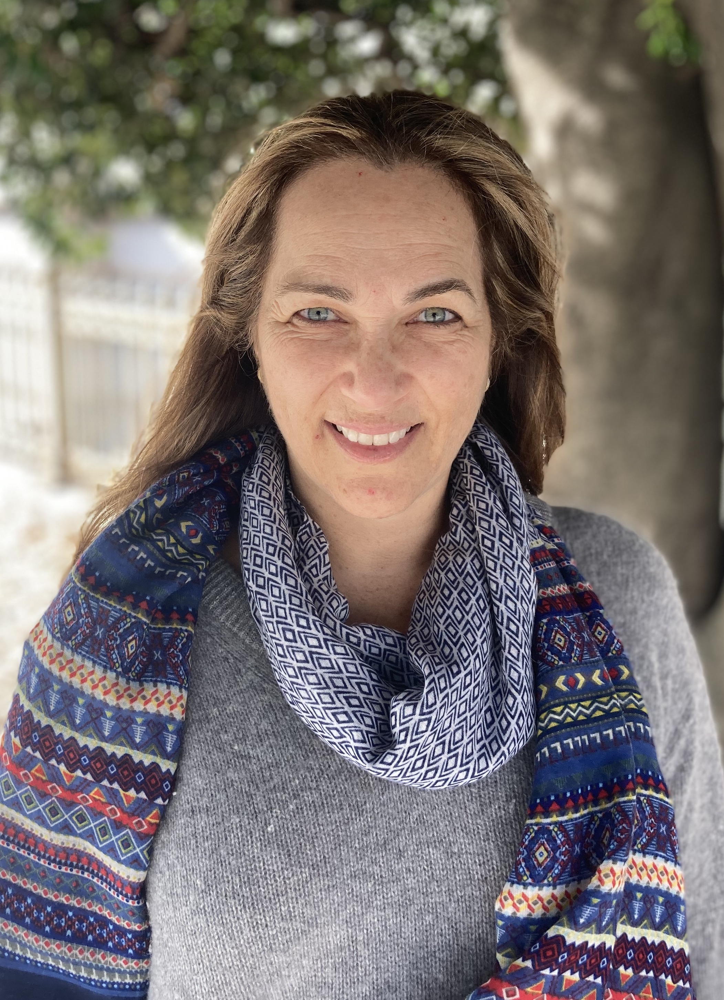Marisa Velarde was born in Lima, Peru and is pursuing a Masters in Museum Studies at George Washington University with a concentration in Collections Management. Marisa holds a B.A. in Graphic Design and MBA in Marketing. She has previously worked at the Art Museum of the Americas promoting Latin American artists. Marisa aims to continue her research on diversity in the museum field to implement inclusive programs that engage with communities through conversations on traditions, storytelling, and contemporary issues.
XXI. The Immersive Gallery Phenomena: teamLab’s Borderless World of Art and Technology
-
Sam Waltman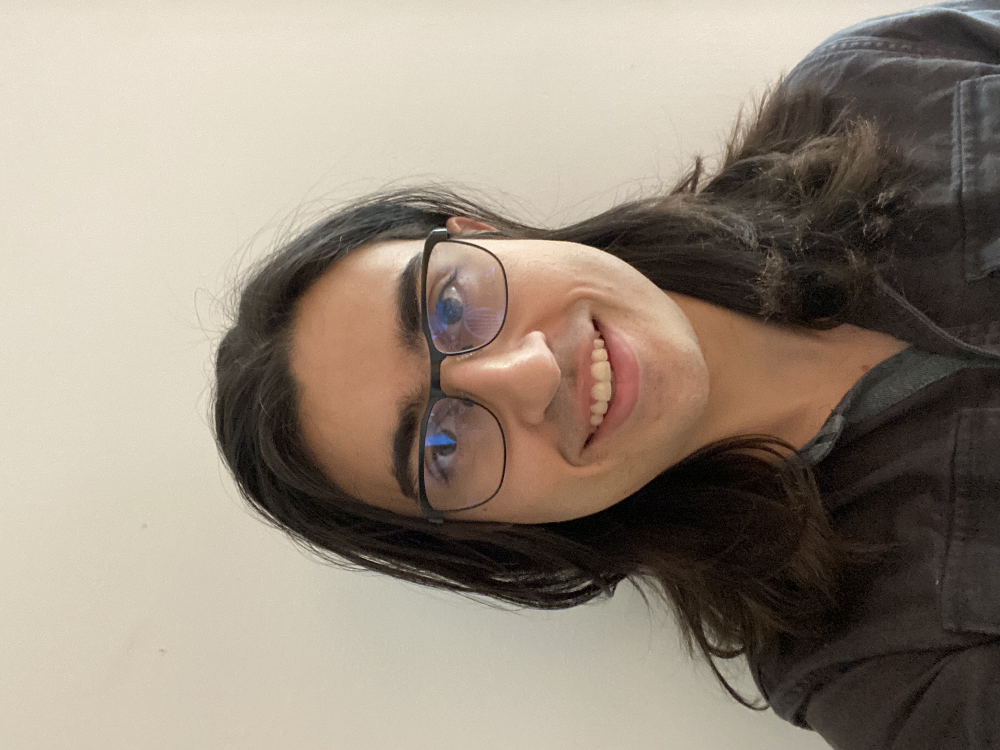Sam Waltman is a graduating MA student in the George Washington Museum Studies MA Program with a focus in collections management. Sam graduated from Dickinson College in 2020 with degrees in History and Educational Studies. Through internships at Fort Ticonderoga, the National Museum of American History and the National Endowment for the Humanities, Sam has developed a strong interest in the tools that museums use to manage and fund their collections projects. Sam has a special interest in how different mediums effect audience interpretation of information. Sam currently works full time as a Collections Technician at George Washington’s Mount Vernon.
-
DiDi Wiles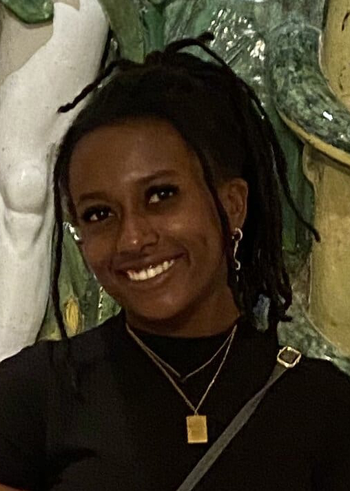DiDi Wiles is a Museum Studies graduate student at the George Washington University. Originally from Michigan, she moved to Connecticut with her family and now lives in Baltimore, Maryland. With her passion for history, DiDi received a B.A. in history and sociology from the University at Albany. She really enjoys researching anything that involves film history, pop culture history, and historical homes. In her spare time you can find her roller skating, watching and creating documentaries, or exploring museums in DC and Maryland.
-
Megan Williams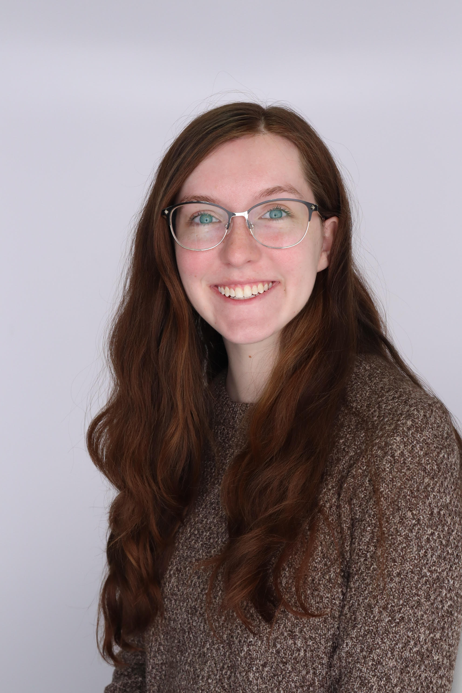Megan Williams (she/her) is a first year masters student at George Washington University, pursuing a degree in Anthropology with a concentration in museum training. She earned her B.S. in Anthropology from Kennesaw State University in Georgia. She is focusing her career on the decolonization of the museum and anthropology fields and how to create a more inclusive environment for all in these spaces. LinkedIn